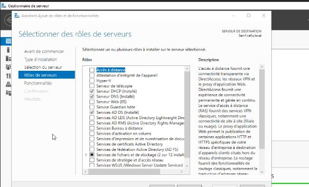
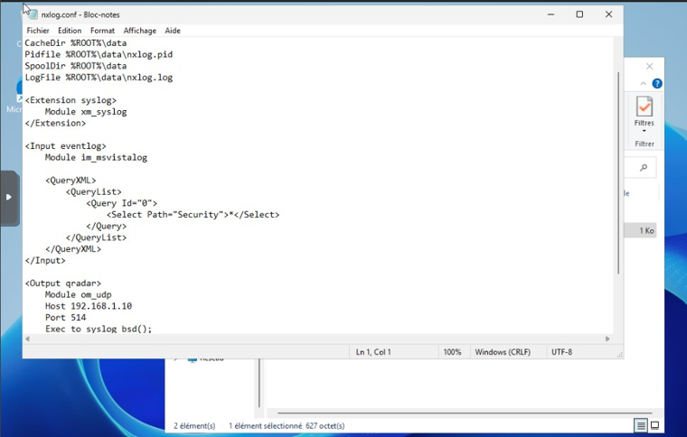
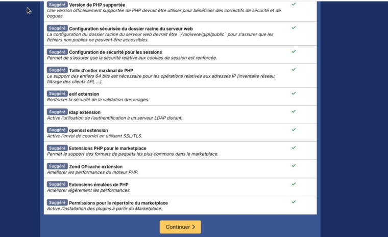
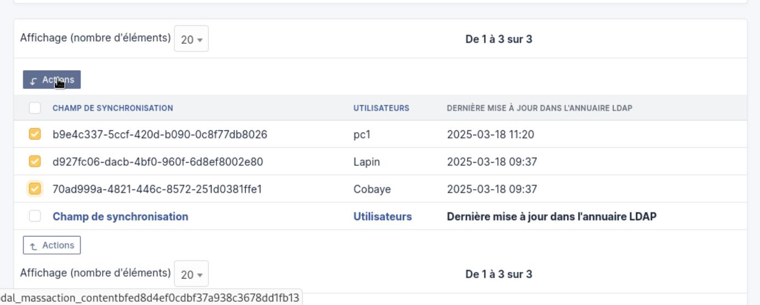
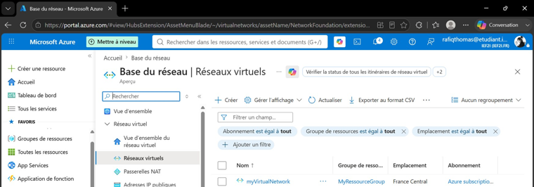

// rafiq@infra ~ status report
Rafiq Thomas
Administrateur systèmes & réseaux en formation — je construis, sécurise et supervise des infrastructures, et je cherche une alternance en Île-de-France pour le faire en conditions réelles.
01 à propos
Étudiant en Bachelor Administrateur d'Infrastructures Sécurisées, après un BTS SIO option SISR, j'ai construit mes bases autant en labo qu'en stage : contrôleur de domaine Active Directory, SIEM QRadar, GLPI, supervision Zabbix, VPN site-à-site, virtualisation Proxmox et administration Azure. Ce qui m'intéresse, c'est faire tourner une infra proprement — documentée, supervisée, sécurisée — pas juste la faire fonctionner une fois.
Je cherche une alternance où je peux apprendre au contact d'une vraie équipe infra, sur des environnements Windows/Linux mixtes.
02 compétences
Stack technique
- Windows Server
- Linux Debian
- Active Directory / GPO
- VLAN
- DNS / DHCP
- VPN IPsec
- Proxmox
- Hyper-V
- Docker
- Zabbix
- Centreon / OCS
- IBM QRadar
- GLPI (LAMP)
- Agent GLPI
- Synchro LDAP
- Fortinet
- Wireshark
- Metasploit
- Azure
- Google Cloud
03 expérience
Technicien Support IT
IEF2I — Paris
- Support utilisateurs à distance et sur site
- Gestion des comptes et droits d'accès sous Active Directory
- Dépannage réseau LAN / Wi-Fi
Technicien Maintenance Informatique
Orabank — Niamey
- Installation et maintenance du parc informatique
- Suivi des sauvegardes et licences logicielles
04 projets techniques
Contrôleur de domaine Active Directory
Déploiement solo d'un contrôleur de domaine Windows Server 2022 sous Proxmox, avec arborescence AD complète.

Ce qui a été fait
- Création de la VM sous Proxmox VE (4 Go RAM, 2 vCPU) et installation de Windows Server 2022
- IP fixe, renommage du serveur, installation du rôle ADDS et promotion en contrôleur de domaine (niveau fonctionnel 2016, DNS auto)
- Création des OU (Utilisateurs, Services, Informatique, Stagiaires), utilisateurs et groupes
- Intégration d'un poste client Windows 10 au domaine et test de connexion
Résultat
- Environnement AD fonctionnel et reproductible : les postes rejoignent le domaine et reçoivent les GPO
SIEM IBM QRadar — collecte multi-sources
Déploiement d'un SIEM QRadar et intégration des logs de trois équipements hétérogènes du réseau.

Ce qui a été fait
- Installation de l'appliance IBM QRadar 7.5 (RHEL) sur une VM Proxmox
- Vérification des événements d'authentification AD (ID 4624, 4625, 4672)
- Intégration Windows via NXLog + GPO d'audit de sécurité
- Intégration Debian via rsyslog, intégration pfSense via Syslog RFC 5424
Mon rôle
Installation complète de l'appliance QRadar, configuration de NXLog (Windows) et de rsyslog (Debian).
Résultat
- Centralisation des logs de sécurité de 3 sources hétérogènes vers un point unique de corrélation
Déploiement GLPI (LAMP + agent)
Installation d'un serveur GLPI 10 sur Debian 12, puis déploiement de l'agent d'inventaire sur des postes Windows.

Ce qui a été fait
- Socle LAMP sous Debian 12 (Apache2, MariaDB, PHP + extensions requises)
- Sécurisation de MariaDB, base et utilisateur dédié avec droits restreints
- Déploiement de GLPI, permissions www-data, suppression du dossier
install/en prod - Déploiement de l'agent GLPI v1.5 (.msi) sur postes Windows, pointé vers le serveur
Résultat
- Inventaire automatique (OS, modèle, fabricant, processeur) sans action manuelle
Synchronisation LDAP ↔ GLPI
Connexion de GLPI à un annuaire Active Directory pour automatiser l'import des comptes utilisateurs.

Ce qui a été fait
- Ajout d'un annuaire LDAP dans GLPI (Configuration > Authentification > LDAP directories)
- Paramétrage : serveur, BaseDN, DN de connexion, filtre
(sAMAccountName=%u) - Test de connexion puis import sélectif via Utilisateurs > LDAP Directory
- Vérification que les comptes s'authentifient avec leurs identifiants AD
Résultat
- Gestion des comptes unifiée entre AD et GLPI, sans ressaisie manuelle
Administration Microsoft Azure
7 ateliers couvrant la mise en réseau, la sécurité, le stockage et le chiffrement sur Azure.

Ce qui a été fait
- VNet et déploiement de VMs sur 3 méthodes : portail, PowerShell, Azure CLI
- Interfaces réseau supplémentaires et IP publiques statiques
- Peering entre VNets et filtrage via groupes de sécurité réseau (NSG)
- Stockage de fichiers et Blob Azure, chiffrement de disques de VM
Résultat
- Maîtrise des briques réseau/sécurité/stockage de base sur Azure, sur plusieurs méthodes de déploiement
VPN site-à-site — IPsec sur FortiGate
Interconnexion sécurisée de deux sites via un tunnel IPsec entre deux pare-feux Fortinet FortiGate.
Ce qui a été fait
- Création du tunnel IPsec via l'assistant VPN de FortiOS (phases IKE 1 et 2)
- Réseaux locaux à chiffrer et politiques de pare-feu autorisant le trafic inter-sites
- Tests de connectivité et vérification du chiffrement du tunnel
Résultat
- Deux sites distants communiquent comme sur un même réseau local, de façon chiffrée
Supervision Zabbix
Déploiement d'une stack de supervision Linux avec alerting sur services critiques.
Ce qui a été fait
- Serveur Zabbix sous Linux et déploiement des agents sur les machines surveillées
- Templates de supervision (CPU, RAM, disque, services)
- Alertes déclenchées en cas de dépassement de seuils
Résultat
- Détection proactive d'incidents avant qu'ils n'impactent les utilisateurs
Sauvegarde automatisée — contrôleur de domaine
Sauvegarde quotidienne automatisée d'un contrôleur de domaine Windows vers un serveur Debian.
Ce qui a été fait
- Tâche planifiée pour exécuter la sauvegarde du contrôleur de domaine à horaire fixe
- Transfert automatisé vers un serveur Debian distant via le réseau
- Vérification de l'intégrité et de la restauration possible des sauvegardes
Résultat
- Reprise d'activité possible en cas de panne du contrôleur de domaine
05 veille technologique
Un sujet sécurité que je suis actuellement de près — cette section s'enrichira au fil de mes lectures et labs.
L'authentification multifacteur (MFA) : où en est-on ?
La MFA impose au moins deux preuves d'identité parmi trois familles : ce que l'on sait (mot de passe, code PIN), ce que l'on possède (téléphone, clé physique) et ce que l'on est (empreinte, reconnaissance faciale). Elle est devenue quasi obligatoire face à la généralisation des fuites d'identifiants et des attaques de phishing.
Méthodes courantes
- Code à usage unique par SMS ou application (OTP / TOTP)
- Notification push à valider sur smartphone
- Clé de sécurité physique ou passkey (norme FIDO2/WebAuthn)
Une limite connue : le contournement humain
Le SMS reste vulnérable au SIM swapping, et les notifications push ont ouvert la voie aux attaques dites de MFA fatigue (ou push bombing) : l'attaquant, en possession du mot de passe, déclenche de nombreuses demandes de validation jusqu'à ce que la victime finisse par accepter par lassitude ou confusion.
Tendance actuelle
Le marché évolue vers une MFA résistante au phishing : le "number matching" (l'utilisateur doit saisir un code affiché sur l'écran de connexion, pas juste taper sur "Accepter") et surtout la généralisation des passkeys, qui remplacent le mot de passe par une paire de clés cryptographiques liée à l'appareil — supprimant le risque de vol d'identifiants réutilisables.
06 certifications
07 contact
[ .. ] STATUT : DISPONIBLE — à la recherche d'une alternance à pourvoir dès que possible en Île-de-France. Réponse sous 24h.